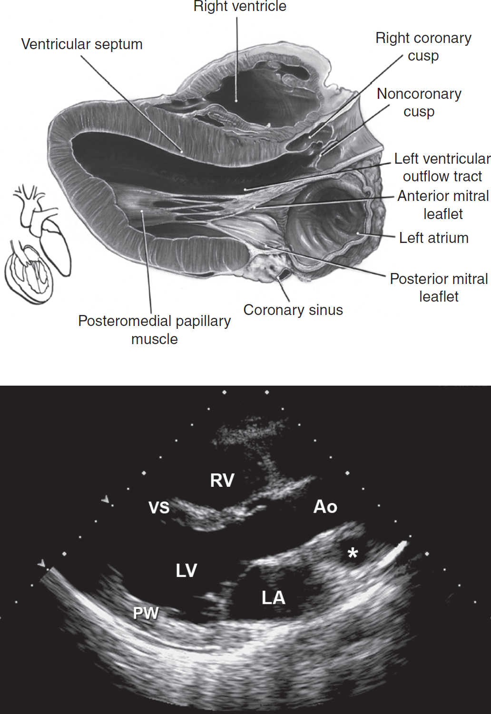

1 Normal PA CXR. The convex right cardiac border is formed by the right atrium (straight arrows), and the curved arrows indicate the location of the superior vena cava. The left cardiac and great vessels border what might be considered as 4 skiing moguls. From cephalad to caudad, the moguls are the aortic arch, the main and left pulmonary arteries, the left atrial appendage, and the left ventricle. (Radiology 101, 3rd ed, 2009.)
2 Normal lateral CXR. (Radiology 101, 3rd ed, 2009.)
3 COPD: with hyperlucent, overinflated lungs and flat diaphragms. (Radiology 101, 3rd ed, 2009.)
4 Interstitial pulmonary edema: with Kerley A, B, and C lines and cephalization of the vascular markings. (Fund. Diag. Radiology, 3rd ed, 2006.)
5 Alveolar pulmonary edema. (Fund. Diag. Radiology, 3rd ed, 2006.)
6 Right upper lobe pneumonia. (Radiology 101, 3rd ed, 2009.)
7 Right middle lobe pneumonia. (Radiology 101, 3rd ed, 2009.)
8 Right lower lobe pneumonia (PA). (Radiology 101, 3rd ed, 2009.)
9 Right lower lobe pneumonia (lateral). (Radiology 101, 3rd ed, 2009.)
10 Bilateral pleural effusions (curved arrows) and enlarged azygous vein (straight arrow). (PA). (Radiology 101, 3rd ed, 2009.)
11 Bilateral pleural effusions (curved arrows) (lateral). (Radiology 101, 3rd ed, 2009.)
12 Pneumothorax. (Radiology 101, 3rd ed, 2009.)
13 Normal chest CT at level of pulmonary arteries (parenchymal windows). (Radiology 101, 3rd ed, 2009.)
14 Bilateral PE (mediastinal windows). (Radiology 101, 3rd ed, 2009.)
15 Sarcoidosis with perilymphatic nodules. (Fund. Diag. Radiology, 3rd ed, 2006.)
16 Idiopathic pulmonary fibrosis. (Fund. Diag. Radiology, 3rd ed, 2006.)
17 Normal abdomen CT at level of liver & spleen. (Radiology 101, 3rd ed, 2009.)
18 Normal abdomen CT at level of pancreas. (Radiology 101, 3rd ed, 2009.)

1 Parasternal long-axis view allows visualization of the right ventricle (RV), ventricular septum (VS), posterior wall (PW) aortic valve cusps, left ventricle (LV), mitral valve, left atrium (LA), and ascending thoracic aorta (Ao). *Pulmonary artery. (Top: From Mayo Clinic Proceedings [Tajik AJ, Seward JB, Hagler DJ, et al. Two-dimensional real-time ultrasonic imaging of the heart and great vessels: Technique, image orientation, structure identification, and validation. Mayo Clinic Proceedings, 1978;53:271–303], with permission. Bottom: From Oh JK, Seward JB, Tajik AJ. The Echo Manual, 3rd ed. Philadelphia: Lippincott Williams & Wilkins, 2006. By permission of Mayo Foundation for Medical Education and Research. All rights reserved.)
2 Parasternal short-axis view at the level of the aorta: LA, left atrium; PV, pulmonary valve; RA, right atrium; RVOT, right ventricular outflow tract. (Top: From Mayo Clinic Proceedings [Tajik AJ, Seward JB, Hagler DJ, et al. Two-dimensional real-time ultrasonic imaging of the heart and great vessels: Technique, image orientation, structure identification, and validation. Mayo Clinic Proceedings, 1978;53:271–303], with permission. Bottom: From Oh JK, Seward JB, Tajik AJ. The Echo Manual, 3rd ed. Philadelphia: Lippincott Williams & Wilkins, 2006. By permission of Mayo Foundation for Medical Education and Research. All rights reserved.)
3 Parasternal short-axis view at the level of the papillary muscles: AL, anterolateral papillary muscle; LV, left ventricle; PM, posteromedial papillary muscle; RV, right ventricle; VS, ventricular septum. (Top: From Mayo Clinic Proceedings [Tajik AJ, Seward JB, Hagler DJ, et al. Two-dimensional real-time ultrasonic imaging of the heart and great vessels: Technique, image orientation, structure identification, and validation. Mayo Clinic Proceedings, 1978;53:271–303], with permission. Bottom: From Oh JK, Seward JB, Tajik AJ. The Echo Manual, 3rd ed. Philadelphia: Lippincott Williams & Wilkins, 2006. By permission of Mayo Foundation for Medical Education and Research. All rights reserved.)
4 Apical four-chamber view: Note that at some institutions the image is re- versed so that the left side of the heart appears on the right side of the screen. LA, left atrium; LV, left ventricle; RA, right atrium; RV, right ventricle. (Top: From Mayo Clinic Proceedings [Tajik AJ, Seward JB, Hagler DJ, et al. Two-dimensional real-time ultrasonic imaging of the heart and great vessels: Technique, image orientation, structure identification, and validation. Mayo Clinic Proceedings, 1978;53:271–303], with permission. Bottom: From Oh JK, Seward JB, Tajik AJ. The Echo Manual, 3rd ed. Philadelphia: Lippincott Williams & Wilkins, 2006. By permission of Mayo Foundation for Medical Education and Research. All rights reserved.)
Coronary arteries. (From Grossman WG. Cardiac Catheterization and Angiography, 4th ed. Philadelphia: Lea & Febiger, 1991, with permission.)
1 Normal smear.
2 Hypochromic, microcytic anemia due to iron-deficiency.
3 Macrocytic anemia due to pernicious anemia; note macro-ovalocytes and hypersegmented neutrophils.
4 Spherocytes due to autoimmune hemolytic anemia.
5 Sickle cell anemia.
6 Schistocytes.
7 Teardrop shaped RBC (dacrocyte).
8 Acanthocytes.
9 Nucleated RBC.
10 Rouleaux.
1 AML with Auer rod.
2 ALL.
3 CML.
4 CLL.
All photos excluding Leukemias Fig. 4: From Wintrobe’s Clin. Hematol. 12th ed, 2009: Leukemias. Fig. 4: From Devita, Hellman, and Rosenberg’s Cancer: Princip. & Prac. of Oncol. 8th ed, 2008.
1 “Muddy brown” or granular cast (courtesy Nicholas Zwang, MD)
2 Hyaline cast (courtesy Nicholas Zwang, MD)
3 “Waxy broad” cast (courtesy Nicholas Zwang, MD)
4 Renal tubular epithelial cell (courtesy Nicholas Zwang, MD)
5 RBC cast (courtesy Harish Seethapathy, MBBS)
6 WBC cast (courtesy Harish Seethapathy, MBBS)
7 Calcium oxalate crystals (courtesy Mallika Mendu, MD). Calcium dihydrate (arrow), calcium monohydrate (dashed arrow), and amorphous calcium crystals (arrow-head)
8 “Struvite” magnesium ammonia phosphate crystals (courtesy Brett Carroll, MD)

9 Cystine crystals (Clin. Lab. Medicine, 1994.)

10 Sulfadiazine “shock of wheat” crystals (courtesy Nicholas Zwang, MD)
11a Uric acid crystals under polarized light (courtesy Harish Seethapathy, MBBS)
11b Uric acid crystals under normal light (courtesy Harish Seethapathy, MBBS)
12 Acyclovir needle crystals (courtesy Yuvaram Reddy, MBBS)
Table of contents
- Cover
- Title Page
- Copyright Page
- Contents
- Contributing Authors
- Foreword
- Preface
-
CARDIOLOGY
- Electrocardiography
- Chest Pain
- Noninvasive Evaluation of CAD
- Coronary Angiography & PCI
- Stable Ischemic Heart Disease
- Acute Coronary Syndromes
- PA Catheter and Tailored Therapy
- Heart Failure
- Cardiomyopathies
- Valvular Heart Disease
- Pericardial Disease
- Hypertension
- Aortic Aneurysms
- Acute Aortic Syndromes
- Arrhythmias
- Atrial Fibrillation
- Syncope
- Cardiac Rhythm Management Devices
- Cardiac Risk Assessment for Noncardiac Surgery
- Peripheral Artery Disease
-
PULMONARY
- Dyspnea
- Pulmonary Function Tests
- Asthma
- Anaphylaxis
- Chronic Obstructive Pulmonary Disease
- Solitary Pulmonary Nodule
- Hemoptysis
- Bronchiectasis
- Cystic Fibrosis
- Interstitial Lung Disease
- Pleural Effusion
- Venous Thromboembolism
- Pulmonary Hypertension
- Respiratory Failure
- Mechanical Ventilation
- Acute Respiratory Distress Syndrome
- Sepsis and Shock
- Toxicology
- Lung Transplant
- GASTROENTEROLOGY
- NEPHROLOGY
-
HEMATOLOGY-ONCOLOGY
- Anemia
- Disorders of Hemostasis
- Platelet Disorders
- Coagulopathies
- Hypercoagulable States
- Disorders of Leukocytes
- Transfusion Therapy
- Myelodysplastic Syndromes
- Myeloproliferative Neoplasms
- Leukemia
- Lymphoma and CLL
- Plasma Cell Dyscrasias
- Hematopoietic Stem Cell Transplantation
- Lung Cancer
- Breast Cancer
- Prostate Cancer
- Colorectal Cancer
- Pancreatic Tumors
- Other Solid Tumors
- Immunotherapy & Cellular Therapy
- Oncologic Emergencies
- Chemo Side Effects
- INFECTIOUS DISEASES
- ENDOCRINOLOGY
-
RHEUMATOLOGY
- Approach to Rheumatic Disease
- Rheumatoid Arthritis
- Adult-Onset Still’s Disease & Relapsing Polychondritis
- Crystal Deposition Arthritides
- Seronegative Spondyloarthritis
- Infectious Arthritis & Bursitis
- Connective Tissue Diseases
- Systemic Lupus Erythematosus
- IgG4-Related Disease
- Vasculitis
- Autoinflammatory Syndromes
- Amyloidosis
- NEUROLOGY
- CONSULTS
- APPENDIX
- ABBREVIATIONS
- INDEX
- PHOTO INSERTS
- ACLS